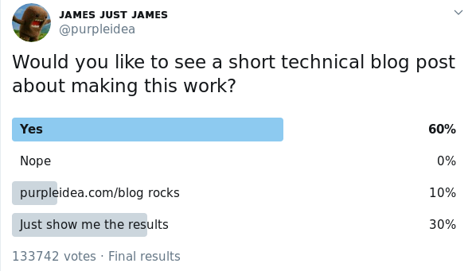

Transportation is very important to me. My whole life I’ve never owned a car. I have gotten by with biking, public transit, and various car sharing services. Sadly, biking is incredibly dangerous and stressful, because most cars don’t respect bicycles, and in the winter it’s not very practical, the STM (public transit) offers an incredibly unreliable and unpleasant service, and Car2Go (car sharing) now requires that you use their proprietary smart phone app (you used to be able to just swipe the membership card) so I finally gave up and decided to buy a used car.
I ended up buying a used, manual, 2013 Honda Civic EX. It has a USB port, so let’s get this thing playing some music!
I put a bunch of songs on a USB key and plugged it in. Various failures occured…
(I had some images, but I seem to have lost them…)
Each attempt was a trip back to the car with a newly setup USB key. I eventually brought my laptop into the car, and started iterating from the simplest possible setup. I couldn’t find any clear answers online, so I decided to document my progress. The internets agreed:
|  |
| I didn't even cheat on the percentages! |
Here’s what I found that works:
I formatted it with the CLI:
sudo mkfs.fat -n CAR /dev/sdx
Note that I specified a SHORT label name in CAPS, used mkfs.fat (not
mkfs.exfat) and used /dev/sdb, not /dev/sdb1. You’ll want to substitute
the device name of your USB key. Look for it with dmesg --follow.
It seems that longer files names with mixed case worked just fine. If in doubt,
just name your files ABCDEFGH.MP3.
You will want to avoid non-mp3 files. You can find them with:
find . -type f -not -iname '*.mp3'
I found that .m4a seemed to work as well, whereas .flac and .ogg did not.
It didn’t hurt to have those files present, they just didn’t show up.
To convert any of your existing files to mp3, you can use:
for i in *; do ffmpeg -i "$i" "${i%.*}.mp3"; done
You can have files in the root directory or even within nested subfolders. I got about three folders deep, but I’m sure even deeper would work, to a point.
I got it all working, but I noticed that my songs were out of order. You really
don’t want the opening track on 2001
playing in the middle of the album. It turns out that the car doesn’t respect
either .m3u playlist files, or alphabetical ordering. It actually plays files
in the order they’re stored in on the filesystem!
Thankfully, some wonderful hackers have already solved this problem. There’s a
tool called fatsort (that’s even packaged in Fedora) which will take an
existing filesystem, and re-order it so that the files are stored in the
ordering that you want. I used “natural order” sorting. You can run it with:
sudo fatsort -n /dev/sdb1 # or check the order with -l
My notes specified /dev/sdb1, not /dev/sdb. In case this doesn’t work, you
can experiment with the other one. As usual, pick the actual device you’re
using.
Very simple!
No place to charge. I don’t own a home, and I don’t have a dedicated parking spot, so I don’t have a good place to charge it. There are public chargers in my city, but you can only park in them for up to four hours, so it ends up being a nuisance.
Privacy. Most of them are giant piles of garbage software that you can’t control or audit, and which are constantly reporting back to the manufacturer. This is a dystopian nightmare. Maybe climate change will get us first.
Cost. They’re incredibly expensive. Hopefully this will get better over time.
Cars are becoming more like smartphones, and as a result we’re getting stuck with a bunch of proprietary spyware, which hurts all of the users. Hopefully we can come together as consumers and mandate that safety critical devices like cars, airplanes, and pacemakers be required to open source their code. Until then, I’ll be listening to my old-school hip-hop when I’m on the road.
Happy Hacking,
James
You can hire James and his team at m9rx corporation.
You can follow James on Mastodon for more frequent updates and other random thoughts.
You can follow James on Twitter for more frequent updates and other random thoughts.
You can support James on GitHub if you'd like to help sustain this kind of content.
You can support James on Patreon if you'd like to help sustain this kind of content.
Your comment has been submitted and will be published if it gets approved.
Click here to see the patch you generated.
{kind=link}
Comments
Nothing yet.
Post a comment